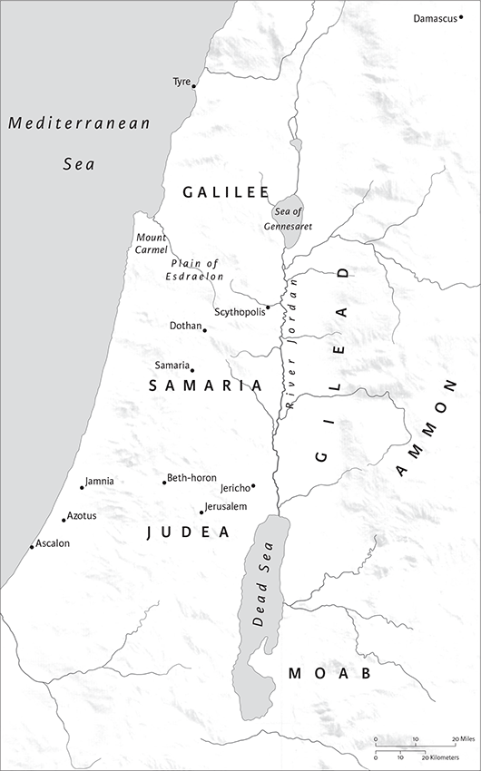

Judith
Name, Date of Composition, and Canonical Status
The book of Judith, which is named for its spirited heroine, is an entertaining narrative that has engaged Jewish and Christian imaginations for centuries and in many different ways. In Jewish tradition, Judith is celebrated as a heroine who protected her people, while in Christian tradition Judith has often represented such virtues as chastity and slaying lust. The book was probably composed near the end of the second century bce in the aftermath of the Maccabean Revolt, which it appears to idealize. Its style suggests that the Greek text in which it was transmitted was translated from Hebrew or Aramaic, but it is perhaps more likely that it was composed in a style of Greek that mimics biblical style; no ancient Hebrew manuscript of the book has been found. Many of the biblical quotations correspond more closely to the ancient Greek translation (the Septuagint) than to the Hebrew Bible. The book is considered canonical in Roman Catholic and Eastern Orthodox churches and as part of the Apocrypha by Protestants.
Genre, Structure, and Interpretation
Although the book of Judith came to be considered historical, it was composed as a historical novella with a central female protagonist, much like Esther, Susanna, and Joseph and Aseneth, all of which have similarities to Greek and Roman novels. The book's fictional nature is evident from its blending of history and fiction, beginning in the very first verse and is too prevalent thereafter to be considered mere historical mistake. Thus, the great villain is “Nebuchadnezzar, who ruled over the Assyrians” (1.1), but the historical Nebuchadnezzar was the famous king of the Babylonians. Other details are also patently unbelievable, such as fictional place names, the immense size of armies and fortifications, the dating of events, and the actions of the Assyrian general Holofernes.
Like the books of Jonah and Job and the more contemporary novellas, Judith would not have been understood as a factual account at the time of its composition. With its blend of fiction and ancient history, it should also be read in light of historical events at the time it was written. The “Assyrian” Nebuchadnezzar may be a cipher for the Syrian Antiochus IV Epiphanes, who had also tried to enforce a foreign worship on Israel. The Maccabees, however, showed strength of resolve and won their freedom.
The book of Judith entertains and instructs by combining irony and humor, bombast and fascinating detail, sexual suggestiveness and pious self-denial bordering on asceticism, outrageous reversals of gender roles and conservative religious values, escapism and celebration of military success. Moreover, the plot's careful structure and the commanding figure of Judith herself make this a compelling tale. The story has two parts of approximately equal length. Chapters 1–7 describe the rise of the threat to Israel, the evil king Nebuchadnezzar of the Assyrians and his sycophantic general Holofernes. This first part concludes as Holofernes's worldwide campaign has converged at the mountain pass where Judith's village, Bethulia, is located. The second part, chs 8–16, introduces Judith and depicts her heroic actions to save her people. Each of the two parts has a clear chiastic pattern in which the order of events is reversed at a central moment in the narrative.
The first half, which at first seems tedious in its description of the military developments, actually serves to develop a number of important themes. It alternates battles with reflection, rousing action with rest. In contrast, the second half is mainly devoted to Judith's strength of character and the central beheading scene, which is told quickly. Perhaps such brevity implies that the original audience would have known the story, but the artistry lies in describing not what happens as much as how it happens, building to this climax. Other paired figures and expressions also contribute to the structure: Nebuchadnezzar and God each have a “general,” Holofernes and Judith, and each of them has a servant, Bagoas and Judith's maid.
The character of Judith is also larger than life, and she has won a place in Jewish and Christian lore, art, poetry, and drama. Her name is the feminine form of Yehudi, which means Judean or Jew, and suggests that she represents both the heroic spirit of the Jewish people and the female equivalent of Judah Maccabee. Because of her unswerving religious devotion, she is able to step outside of her widow's role, dress and act in a sexually provocative manner, lie to the opposing general Holofernes, seduce him, and behead him, without a single moment of self-doubt. Yet the book does not undermine accepted social conventions, for in the end Judith returns to her life as an exemplary pious widow. Thus, like many comedies, the book of Judith allows for a release of social tensions, explores transgressions of everyday rules, and then reconstitutes on acceptable lines.
The book constantly echoes biblical narratives, most notably the assassination of Sisera by Jael in Judges 4–5 and the revenge of Simeon and Levi on Shechem after the rape of Dinah in Genesis 34. Judith's deliverance of her people from danger likens her to the judges of Israel. She is also similar to Moses, as when she responds to murmuring over water and the testing of God (8.9–27; cf. Ex 17.1–7), and when her hand is compared to the hand of Moses (see 8.33n.; cf. Ex 14.16). The story also recalls folk traditions about male heroes, but adds humor and irony by making the hero a pious widow who transgresses the social restrictions of her gender in order to save her people and defend her God. Although some modern interpreters have questioned Judith's morality, in the ancient world Judith was always remembered positively as a heroine of the faith.
Lawrence M. Wills
1
It was the twelfth year of the reign of Nebuchadnezzar, who ruled over the Assyrians in the great city of Nineveh. In those days Arphaxad ruled over the Medes in Ecbatana. 2He built walls around Ecbatana with hewn stones three cubits thick and six cubits long; he made the walls seventy cubits high and fifty cubits wide. 3At its gates he raised towers one hundred cubits high and sixty cubits wide at the foundations. 4He made its gates seventy cubits high and forty cubits wide to allow his armies to march out in force and his infantry to form their ranks. 5Then King Nebuchadnezzar made war against King Arphaxad in the great plain that is on the borders of Ragau. 6There rallied to him all the people of the hill country and all those who lived along the Euphrates, the Tigris, and the Hydaspes, and, on the plain, Arioch, king of the Elymeans. Thus, many nations joined the forces of the Chaldeans.a
7Then Nebuchadnezzar, king of the Assyrians, sent messengers to all who lived in Persia and to all who lived in the west, those who lived in Cilicia and Damascus, Lebanon and Antilebanon, and all who lived along the seacoast, 8and those among the nations of Carmel and Gilead, and Upper Galilee and the great plain of Esdraelon, 9and all who were in Samaria and its towns, and beyond the Jordan as far as Jerusalem and Bethany and Chelous and Kadesh and the river of Egypt, and Tahpanhes and Raamses and the whole land of Goshen, 10even beyond Tanis and Memphis, and all who lived in Egypt as far as the borders of Ethiopia. 11But all who lived in the whole region disregarded the summons of Nebuchadnezzar, king of the Assyrians, and refused to join him in the war; for they were not afraid of him, but regarded him as only one man.b So they sent back his messengers empty-handed and in disgrace.
12Then Nebuchadnezzar became very angry with this whole region, and swore by his throne and kingdom that he would take revenge on the whole territory of Cilicia and Damascus and Syria, that he would kill with his sword also all the inhabitants of the land of Moab, and the people of Ammon, and all Judea, and every one in Egypt, as far as the coasts of the two seas.
13In the seventeenth year he led his forces against King Arphaxad and defeated him in battle, overthrowing the whole army of Arphaxad and all his cavalry and all his chariots. 14Thus he took possession of his towns and came to Ecbatana, captured its towers, plundered its markets, and turned its glory into disgrace. 15He captured Arphaxad in the mountains of Ragau and struck him down with his spears, thus destroying him once and for all. 16Then he returned to Nineveh, he and all his combined forces, a vast body of troops; and there he and his forces rested and feasted for one hundred twenty days.
2
In the eighteenth year, on the twenty-second day of the first month, there was talk in the palace of Nebuchadnezzar, king of the Assyrians, about carrying out his revenge on the whole region, just as he had said. 2He summoned all his ministers and all his nobles and set before them his secret plan and recounted fully, with his own lips, all the wickedness of the region.c 3They decided that every one who had not obeyed his command should be destroyed.
4When he had completed his plan, Nebuchadnezzar, king of the Assyrians, called Holofernes, the chief general of his army, second only to himself, and said to him, 5“Thus says the Great King, the lord of the whole earth: Leave my presence and take with you men confident in their strength, one hundred twenty thousand foot soldiers and twelve thousand cavalry. 6March out against all the land to the west, because they disobeyed my orders. 7Tell them to prepare earth and water, for I am coming against them in my anger, and will cover the whole face of the earth with the feet of my troops, to whom I will hand them over to be plundered. 8Their wounded shall fill their ravines and gullies, and the swelling river shall be filled with their dead. 9I will lead them away captive to the ends of the whole earth. 10You shall go and seize all their territory for me in advance. They must yield themselves to you, and you shall hold them for me until the day of their punishment. 11But to those who resist show no mercy, but hand them over to slaughter and plunder throughout your whole region. 12For as I live, and by the power of my kingdom, what I have spoken I will accomplish by my own hand. 13And you—take care not to transgress any of your lord's commands, but carry them out exactly as I have ordered you; do it without delay.”
14So Holofernes left the presence of his lord, and summoned all the commanders, generals, and officers of the Assyrian army. 15He mustered the picked troops by divisions as his lord had ordered him to do, one hundred twenty thousand of them, together with twelve thousand archers on horseback, 16and he organized them as a great army is marshaled for a campaign. 17He took along a vast number of camels and donkeys and mules for transport, and innumerable sheep and oxen and goats for food; 18also ample rations for everyone, and a huge amount of gold and silver from the royal palace.
19Then he set out with his whole army, to go ahead of King Nebuchadnezzar and to cover the whole face of the earth to the west with their chariots and cavalry and picked foot soldiers. 20Along with them went a mixed crowd like a swarm of locusts, like the dusta of the earth—a multitude that could not be counted.
21They marched for three days from Nineveh to the plain of Bectileth, and camped opposite Bectileth near the mountain that is to the north of Upper Cilicia. 22From there Holofernesb took his whole army, the infantry, cavalry, and chariots, and went up into the hill country. 23He ravaged Put and Lud, and plundered all the Rassisites and the Ishmaelites on the border of the desert, south of the country of the Chelleans. 24Then he followedc the Euphrates and passed through Mesopotamia and destroyed all the fortified towns along the brook Abron, as far as the sea. 25He also seized the territory of Cilicia, and killed everyone who resisted him. Then he came to the southern borders of Japheth, facing Arabia. 26He surrounded all the Midianites, and burned their tents and plundered their sheepfolds. 27Then he went down into the plain of Damascus during the wheat harvest, and burned all their fields and destroyed their flocks and herds and sacked their towns and ravaged their lands and put all their young men to the sword.
28So fear and dread of him fell upon all the people who lived along the seacoast, at Sidon and Tyre, and those who lived in Sur and Ocina and all who lived in Jamnia. Those who lived in Azotus and Ascalon feared him greatly.
3
They therefore sent messengers to him to sue for peace in these words: 2“We, the servants of Nebuchadnezzar, the Great King, lie prostrate before you. Do with us whatever you will. 3See, our buildings and all our land and all our wheat fields and our flocks and herds and all our encampmentsa lie before you; do with them as you please. 4Our towns and their inhabitants are also your slaves; come and deal with them as you see fit.”
5The men came to Holofernes and told him all this. 6Then he went down to the seacoast with his army and stationed garrisons in the fortified towns and took picked men from them as auxiliaries. 7These people and all in the countryside welcomed him with garlands and dances and tambourines. 8Yet he demolished all their shrinesb and cut down their sacred groves; for he had been commissioned to destroy all the gods of the land, so that all nations should worship Nebuchadnezzar alone, and that all their dialects and tribes should call upon him as a god.
9Then he came toward Esdraelon, near Dothan, facing the great ridge of Judea; 10he camped between Geba and Scythopolis, and remained for a whole month in order to collect all the supplies for his army.
4
When the Israelites living in Judea heard of everything that Holofernes, the general of Nebuchadnezzar, the king of the Assyrians, had done to the nations, and how he had plundered and destroyed all their temples, 2they were therefore greatly terrified at his approach; they were alarmed both for Jerusalem and for the temple of the Lord their God. 3For they had only recently returned from exile, and all the people of Judea had just now gathered together, and the sacred vessels and the altar and the temple had been consecrated after their profanation. 4So they sent word to every district of Samaria, and to Kona, Beth-horon, Belmain, and Jericho, and to Choba and Aesora, and the valley of Salem. 5They immediately seized all the high hilltops and fortified the villages on them and stored up food in preparation for war—since their fields had recently been harvested.
6The high priest, Joakim, who was in Jerusalem at the time, wrote to the people of Bethulia and Betomesthaim, which faces Esdraelon opposite the plain near Dothan, 7ordering them to seize the mountain passes, since by them Judea could be invaded; and it would be easy to stop any who tried to enter, for the approach was narrow, wide enough for only two at a time to pass.
8So the Israelites did as they had been ordered by the high priest Joakim and the senate of the whole people of Israel, in session at Jerusalem. 9And every man of Israel cried out to God with great fervor, and they humbled themselves with much fasting. 10They and their wives and their children and their cattle and every resident alien and hired laborer and purchased slave—they all put sackcloth around their waists. 11And all the Israelite men, women, and children living at Jerusalem prostrated themselves before the temple and put ashes on their heads and spread out their sackcloth before the Lord. 12They even draped the altar with sackcloth and cried out in unison, praying fervently to the God of Israel not to allow their infants to be carried off and their wives to be taken as booty, and the towns they had inherited to be destroyed, and the sanctuary to be profaned and desecrated to the malicious joy of the Gentiles.
13The Lord heard their prayers and had regard for their distress; for the people fasted many days throughout Judea and in Jerusalem before the sanctuary of the Lord Almighty. 14The high priest Joakim and all the priests who stood before the Lord and ministered to the Lord, with sackcloth around their loins, offered the daily burnt offerings, the votive offerings, and freewill offerings of the people. 15With ashes on their turbans, they cried out to the Lord with all their might to look with favor on the whole house of Israel.
5
It was reported to Holofernes, the general of the Assyrian army, that the people of Israel had prepared for war and had closed the mountain passes and fortified all the high hilltops and set up barricades in the plains. 2In great anger he called together all the princes of Moab and the commanders of Ammon and all the governors of the coastland, 3and said to them, “Tell me, you Canaanites, what people is this that lives in the hill country? What towns do they inhabit? How large is their army, and in what does their power and strength consist? Who rules over them as king and leads their army? 4And why have they alone, of all who live in the west, refused to come out and meet me?”
5Then Achior, the leader of all the Ammonites, said to him, “May my lord please listen to a report from the mouth of your servant, and I will tell you the truth about this people that lives in the mountain district near you. No falsehood shall come from your servant's mouth. 6These people are descended from the Chaldeans. 7At one time they lived in Mesopotamia, because they did not wish to follow the gods of their ancestors who were in Chaldea. 8Since they had abandoned the ways of their ancestors, and worshiped the God of heaven, the God they had come to know, their ancestorsa drove them out from the presence of their gods. So they fled to Mesopotamia, and lived there for a long time. 9Then their God commanded them to leave the place where they were living and go to the land of Canaan. There they settled, and grew very prosperous in gold and silver and very much livestock. 10When a famine spread over the land of Canaan they went down to Egypt and lived there as long as they had food. There they became so great a multitude that their race could not be counted. 11So the king of Egypt became hostile to them; he exploited them and forced them to make bricks. 12They cried out to their God, and he afflicted the whole land of Egypt with incurable plagues. So the Egyptians drove them out of their sight. 13Then God dried up the Red Sea before them, 14and he led them by the way of Sinai and Kadesh-barnea. They drove out all the people of the desert, 15and took up residence in the land of the Amorites, and by their might destroyed all the inhabitants of Heshbon; and crossing over the Jordan they took possession of all the hill country. 16They drove out before them the Canaanites, the Perizzites, the Jebusites, the Shechemites, and all the Gergesites, and lived there a long time.

The geography of the book of Judith
17“As long as they did not sin against their God they prospered, for the God who hates iniquity is with them. 18But when they departed from the way he had prescribed for them, they were utterly defeated in many battles and were led away captive to a foreign land. The temple of their God was razed to the ground, and their towns were occupied by their enemies. 19But now they have returned to their God, and have come back from the places where they were scattered, and have occupied Jerusalem, where their sanctuary is, and have settled in the hill country, because it was uninhabited.
20“So now, my master and lord, if there is any oversight in this people and they sin against their God and we find out their offense, then we can go up and defeat them. 21But if they are not a guilty nation, then let my lord pass them by; for their Lord and God will defend them, and we shall become the laughingstock of the whole world.”
22When Achior had finished saying these things, all the people standing around the tent began to complain; Holofernes’ officers and all the inhabitants of the seacoast and Moab insisted that he should be cut to pieces. 23They said, “We are not afraid of the Israelites; they are a people with no strength or power for making war. 24Therefore let us go ahead, Lord Holofernes, and your vast army will swallow them up.”
6
When the disturbance made by the people outside the council had died down, Holofernes, the commander of the Assyrian army, said to Achiorb in the presence of all the foreign contingents:
2“Who are you, Achior and you mercenaries of Ephraim, to prophesy among us as you have done today and tell us not to make war against the people of Israel because their God will defend them? What god is there except Nebuchadnezzar? He will send his forces and destroy them from the face of the earth. Their God will not save them; 3we the king'sc servants will destroy them as one man. They cannot resist the might of our cavalry. 4We will overwhelm them;d their mountains will be drunk with their blood, and their fields will be full of their dead. Not even their footprints will survive our attack; they will utterly perish. So says King Nebuchadnezzar, lord of the whole earth. For he has spoken; none of his words shall be in vain.
5“As for you, Achior, you Ammonite mercenary, you have said these words in a moment of perversity; you shall not see my face again from this day until I take revenge on this race that came out of Egypt. 6Then at my return the sword of my army and the speara of my servants shall pierce your sides, and you shall fall among their wounded. 7Now my slaves are going to take you back into the hill country and put you in one of the towns beside the passes. 8You will not die until you perish along with them. 9If you really hope in your heart that they will not be taken, then do not look downcast! I have spoken, and none of my words shall fail to come true.”
10Then Holofernes ordered his slaves, who waited on him in his tent, to seize Achior and take him away to Bethulia and hand him over to the Israelites. 11So the slaves took him and led him out of the camp into the plain, and from the plain they went up into the hill country and came to the springs below Bethulia. 12When the men of the town saw them,b they seized their weapons and ran out of the town to the top of the hill, and all the slingers kept them from coming up by throwing stones at them. 13So having taken shelter below the hill, they bound Achior and left him lying at the foot of the hill, and returned to their master.
14Then the Israelites came down from their town and found him; they untied him and brought him into Bethulia and placed him before the magistrates of their town, 15who in those days were Uzziah son of Micah, of the tribe of Simeon, and Chabris son of Gothoniel, and Charmis son of Melchiel. 16They called together all the elders of the town, and all their young men and women ran to the assembly. They set Achior in the midst of all their people, and Uzziah questioned him about what had happened. 17He answered and told them what had taken place at the council of Holofernes, and all that he had said in the presence of the Assyrian leaders, and all that Holofernes had boasted he would do against the house of Israel. 18Then the people fell down and worshiped God, and cried out:
19“O Lord God of heaven, see their arrogance, and have pity on our people in their humiliation, and look kindly today on the faces of those who are consecrated to you.”
20Then they reassured Achior, and praised him highly. 21Uzziah took him from the assembly to his own house and gave a banquet for the elders; and all that night they called on the God of Israel for help.
7
The next day Holofernes ordered his whole army, and all the allies who had joined him, to break camp and move against Bethulia, and to seize the passes up into the hill country and make war on the Israelites. 2So all their warriors marched off that day; their fighting forces numbered one hundred seventy thousand infantry and twelve thousand cavalry, not counting the baggage and the foot soldiers handling it, a very great multitude. 3They encamped in the valley near Bethulia, beside the spring, and they spread out in breadth over Dothan as far as Balbaim and in length from Bethulia to Cyamon, which faces Esdraelon.
4When the Israelites saw their vast numbers, they were greatly terrified and said to one another, “They will now strip clean the whole land; neither the high mountains nor the valleys nor the hills will bear their weight.” 5Yet they all seized their weapons, and when they had kindled fires on their towers, they remained on guard all that night.
6On the second day Holofernes led out all his cavalry in full view of the Israelites in Bethulia. 7He reconnoitered the approaches to their town, and visited the springs that supplied their water; he seized them and set guards of soldiers over them, and then returned to his army.
8Then all the chieftains of the Edomites and all the leaders of the Moabites and the commanders of the coastland came to him and said, 9“Listen to what we have to say, my lord, and your army will suffer no losses. 10This people, the Israelites, do not rely on their spears but on the height of the mountains where they live, for it is not easy to reach the tops of their mountains. 11Therefore, my lord, do not fight against them in regular formation, and not a man of your army will fall. 12Remain in your camp, and keep all the men in your forces with you; let your servants take possession of the spring of water that flows from the foot of the mountain, 13for this is where all the people of Bethulia get their water. So thirst will destroy them, and they will surrender their town. Meanwhile, we and our people will go up to the tops of the nearby mountains and camp there to keep watch to see that no one gets out of the town. 14They and their wives and children will waste away with famine, and before the sword reaches them they will be strewn about in the streets where they live. 15Thus you will pay them back with evil, because they rebelled and did not receive you peaceably.”
16These words pleased Holofernes and all his attendants, and he gave orders to do as they had said. 17So the army of the Ammonites moved forward, together with five thousand Assyrians, and they encamped in the valley and seized the water supply and the springs of the Israelites. 18And the Edomites and Ammonites went up and encamped in the hill country opposite Dothan; and they sent some of their men toward the south and the east, toward Egrebeh, which is near Chusi beside the Wadi Mochmur. The rest of the Assyrian army encamped in the plain, and covered the whole face of the land. Their tents and supply trains spread out in great number, and they formed a vast multitude.
19The Israelites then cried out to the Lord their God, for their courage failed, because all their enemies had surrounded them, and there was no way of escape from them. 20The whole Assyrian army, their infantry, chariots, and cavalry, surrounded them for thirty-four days, until all the water containers of every inhabitant of Bethulia were empty; 21their cisterns were going dry, and on no day did they have enough water to drink, for their drinking water was rationed. 22Their children were listless, and the women and young men fainted from thirst and were collapsing in the streets of the town and in the gateways; they no longer had any strength.
23Then all the people, the young men, the women, and the children, gathered around Uzziah and the rulers of the town and cried out with a loud voice, and said before all the elders, 24“Let God judge between you and us! You have done us a great injury in not making peace with the Assyrians. 25For now we have no one to help us; God has sold us into their hands, to be strewn before them in thirst and exhaustion. 26Now summon them and surrender the whole town as booty to the army of Holofernes and to all his forces. 27For it would be better for us to be captured by them.a We shall indeed become slaves, but our lives will be spared, and we shall not witness our little ones dying before our eyes, and our wives and children drawing their last breath. 28We call to witness against you heaven and earth and our God, the Lord of our ancestors, who punishes us for our sins and the sins of our ancestors; do today the things that we have described!”
29Then great and general lamentation arose throughout the assembly, and they cried out to the Lord God with a loud voice. 30But Uzziah said to them, “Courage, my brothers and sisters!a Let us hold out for five days more; by that time the Lord our God will turn his mercy to us again, for he will not forsake us utterly. 31But if these days pass by, and no help comes for us, I will do as you say.”
32Then he dismissed the people to their various posts, and they went up on the walls and towers of their town. The women and children he sent home. In the town they were in great misery.
8
Now in those days Judith heard about these things: she was the daughter of Merari son of Ox son of Joseph son of Oziel son of Elkiah son of Ananias son of Gideon son of Raphain son of Ahitub son of Elijah son of Hilkiah son of Eliab son of Nathanael son of Salamiel son of Sarasadai son of Israel. 2Her husband Manasseh, who belonged to her tribe and family, had died during the barley harvest. 3For as he stood overseeing those who were binding sheaves in the field, he was overcome by the burning heat, and took to his bed and died in his town Bethulia. So they buried him with his ancestors in the field between Dothan and Balamon. 4Judith remained as a widow for three years and four months 5at home where she set up a tent for herself on the roof of her house. She put sackcloth around her waist and dressed in widow's clothing. 6She fasted all the days of her widowhood, except the day before the sabbath and the sabbath itself, the day before the new moon and the day of the new moon, and the festivals and days of rejoicing of the house of Israel. 7She was beautiful in appearance, and was very lovely to behold. Her husband Manasseh had left her gold and silver, men and women slaves, livestock, and fields; and she maintained this estate. 8No one spoke ill of her, for she feared God with great devotion.
9When Judith heard the harsh words spoken by the people against the ruler, because they were faint for lack of water, and when she heard all that Uzziah said to them, and how he promised them under oath to surrender the town to the Assyrians after five days, 10she sent her maid, who was in charge of all she possessed, to summon Uzziah andb Chabris and Charmis, the elders of her town. 11They came to her, and she said to them:
“Listen to me, rulers of the people of Bethulia! What you have said to the people today is not right; you have even sworn and pronounced this oath between God and you, promising to surrender the town to our enemies unless the Lord turns and helps us within so many days. 12Who are you to put God to the test today, and to set yourselves up in the place ofa God in human affairs? 13You are putting the Lord Almighty to the test, but you will never learn anything! 14You cannot plumb the depths of the human heart or understand the workings of the human mind; how do you expect to search out God, who made all these things, and find out his mind or comprehend his thought? No, my brothers, do not anger the Lord our God. 15For if he does not choose to help us within these five days, he has power to protect us within any time he pleases, or even to destroy us in the presence of our enemies. 16Do not try to bind the purposes of the Lord our God; for God is not like a human being, to be threatened, or like a mere mortal, to be won over by pleading. 17Therefore, while we wait for his deliverance, let us call upon him to help us, and he will hear our voice, if it pleases him.
18“For never in our generation, nor in these present days, has there been any tribe or family or people or town of ours that worships gods made with hands, as was done in days gone by. 19That was why our ancestors were handed over to the sword and to pillage, and so they suffered a great catastrophe before our enemies. 20But we know no other god but him, and so we hope that he will not disdain us or any of our nation. 21For if we are captured, all Judea will be captured and our sanctuary will be plundered; and he will make us pay for its desecration with our blood. 22The slaughter of our kindred and the captivity of the land and the desolation of our inheritance—all this he will bring on our heads among the Gentiles, wherever we serve as slaves; and we shall be an offense and a disgrace in the eyes of those who acquire us. 23For our slavery will not bring us into favor, but the Lord our God will turn it to dishonor.
24“Therefore, my brothers, let us set an example for our kindred, for their lives depend upon us, and the sanctuary—both the temple and the altar—rests upon us. 25In spite of everything let us give thanks to the Lord our God, who is putting us to the test as he did our ancestors. 26Remember what he did with Abraham, and how he tested Isaac, and what happened to Jacob in Syrian Mesopotamia, while he was tending the sheep of Laban, his mother's brother. 27For he has not tried us with fire, as he did them, to search their hearts, nor has he taken vengeance on us; but the Lord scourges those who are close to him in order to admonish them.”
28Then Uzziah said to her, “All that you have said was spoken out of a true heart, and there is no one who can deny your words. 29Today is not the first time your wisdom has been shown, but from the beginning of your life all the people have recognized your understanding, for your heart's disposition is right. 30But the people were so thirsty that they compelled us to do for them what we have promised, and made us take an oath that we cannot break. 31Now since you are a Godfearing woman, pray for us, so that the Lord may send us rain to fill our cisterns. Then we will no longer feel faint from thirst.”
32Then Judith said to them, “Listen to me. I am about to do something that will go down through all generations of our descendants. 33Stand at the town gate tonight so that I may go out with my maid; and within the days after which you have promised to surrender the town to our enemies, the Lord will deliver Israel by my hand. 34Only, do not try to find out what I am doing; for I will not tell you until I have finished what I am about to do.”
35Uzziah and the rulers said to her, “Go in peace, and may the Lord God go before you, to take vengeance on our enemies.” 36So they returned from the tent and went to their posts.
9
Then Judith prostrated herself, put ashes on her head, and uncovered the sackcloth she was wearing. At the very time when the evening incense was being offered in the house of God in Jerusalem, Judith cried out to the Lord with a loud voice, and said,
2“O Lord God of my ancestor Simeon, to whom you gave a sword to take revenge on those strangers who had torn off a virgin's clothinga to defile her, and exposed her thighs to put her to shame, and polluted her womb to disgrace her; for you said, ‘It shall not be done’—yet they did it; 3so you gave up their rulers to be killed, and their bed, which was ashamed of the deceit they had practiced, was stained with blood, and you struck down slaves along with princes, and princes on their thrones. 4You gave up their wives for booty and their daughters to captivity, and all their booty to be divided among your beloved children who burned with zeal for you and abhorred the pollution of their blood and called on you for help. O God, my God, hear me also, a widow.
5“For you have done these things and those that went before and those that followed. You have designed the things that are now, and those that are to come. What you had in mind has happened; 6the things you decided on presented themselves and said, ‘Here we are!’ For all your ways are prepared in advance, and your judgment is with foreknowledge.
7“Here now are the Assyrians, a greatly increased force, priding themselves in their horses and riders, boasting in the strength of their foot soldiers, and trusting in shield and spear, in bow and sling. They do not know that you are the Lord who crushes wars; the Lord is your name. 8Break their strength by your might, and bring down their power in your anger; for they intend to defile your sanctuary, and to pollute the tabernacle where your glorious name resides, and to break off the hornsb of your altar with the sword. 9Look at their pride, and send your wrath upon their heads. Give to me, a widow, the strong hand to do what I plan. 10By the deceit of my lips strike down the slave with the prince and the prince with his servant; crush their arrogance by the hand of a woman.
11“For your strength does not depend on numbers, nor your might on the powerful. But you are the God of the lowly, helper of the oppressed, upholder of the weak, protector of the forsaken, savior of those without hope. 12Please, please, God of my father, God of the heritage of Israel, Lord of heaven and earth, Creator of the waters, King of all your creation, hear my prayer! 13Make my deceitful words bring wound and bruise on those who have planned cruel things against your covenant, and against your sacred house, and against Mount Zion, and against the house your children possess. 14Let your whole nation and every tribe know and understand that you are God, the God of all power and might, and that there is no other who protects the people of Israel but you alone!”
10
When Juditha had stopped crying out to the God of Israel, and had ended all these words, 2she rose from where she lay prostrate. She called her maid and went down into the house where she lived on sabbaths and on her festal days. 3She removed the sackcloth she had been wearing, took off her widow's garments, bathed her body with water, and anointed herself with precious ointment. She combed her hair, put on a tiara, and dressed herself in the festive attire that she used to wear while her husband Manasseh was living. 4She put sandals on her feet, and put on her anklets, bracelets, rings, earrings, and all her other jewelry. Thus she made herself very beautiful, to entice the eyes of all the men who might see her. 5She gave her maid a skin of wine and a flask of oil, and filled a bag with roasted grain, dried fig cakes, and fine bread;b then she wrapped up all her dishes and gave them to her to carry.
6Then they went out to the town gate of Bethulia and found Uzziah standing there with the elders of the town, Chabris and Charmis. 7When they saw her transformed in appearance and dressed differently, they were very greatly astounded at her beauty and said to her, 8“May the God of our ancestors grant you favor and fulfill your plans, so that the people of Israel may glory and Jerusalem may be exalted.” She bowed down to God.
9Then she said to them, “Order the gate of the town to be opened for me so that I may go out and accomplish the things you have just said to me.” So they ordered the young men to open the gate for her, as she requested. 10When they had done this, Judith went out, accompanied by her maid. The men of the town watched her until she had gone down the mountain and passed through the valley, where they lost sight of her.
11As the womenc were going straight on through the valley, an Assyrian patrol met her 12and took her into custody. They asked her, “To what people do you belong, and where are you coming from, and where are you going?” She replied, “I am a daughter of the Hebrews, but I am fleeing from them, for they are about to be handed over to you to be devoured. 13I am on my way to see Holofernes the commander of your army, to give him a true report; I will show him a way by which he can go and capture all the hill country without losing one of his men, captured or slain.”
14When the men heard her words, and observed her face—she was in their eyes marvelously beautiful—they said to her, 15“You have saved your life by hurrying down to see our lord. Go at once to his tent; some of us will escort you and hand you over to him. 16When you stand before him, have no fear in your heart, but tell him what you have just said, and he will treat you well.”
17They chose from their number a hundred men to accompany her and her maid, and they brought them to the tent of Holofernes. 18There was great excitement in the whole camp, for her arrival was reported from tent to tent. They came and gathered around her as she stood outside the tent of Holofernes, waiting until they told him about her. 19They marveled at her beauty and admired the Israelites, judging them by her. They said to one another, “Who can despise these people, who have women like this among them? It is not wise to leave one of their men alive, for if we let them go they will be able to beguile the whole world!”
20Then the guards of Holofernes and all his servants came out and led her into the tent. 21Holofernes was resting on his bed under a canopy that was woven with purple and gold, emeralds and other precious stones. 22When they told him of her, he came to the front of the tent, with silver lamps carried before him. 23When Judith came into the presence of Holofernesa and his servants, they all marveled at the beauty of her face. She prostrated herself and did obeisance to him, but his slaves raised her up.
11
Then Holofernes said to her, “Take courage, woman, and do not be afraid in your heart, for I have never hurt anyone who chose to serve Nebuchadnezzar, king of all the earth. 2Even now, if your people who live in the hill country had not slighted me, I would never have lifted my spear against them. They have brought this on themselves. 3But now tell me why you have fled from them and have come over to us. In any event, you have come to safety. Take courage! You will live tonight and ever after. 4No one will hurt you. Rather, all will treat you well, as they do the servants of my lord King Nebuchadnezzar.”
5Judith answered him, “Accept the words of your slave, and let your servant speak in your presence. I will say nothing false to my lord this night. 6If you follow out the words of your servant, God will accomplish something through you, and my lord will not fail to achieve his purposes. 7By the life of Nebuchadnezzar, king of the whole earth, and by the power of him who has sent you to direct every living being! Not only do human beings serve him because of you, but also the animals of the field and the cattle and the birds of the air will live, because of your power, under Nebuchadnezzar and all his house. 8For we have heard of your wisdom and skill, and it is reported throughout the whole world that you alone are the best in the whole kingdom, the most informed and the most astounding in military strategy.
9“Now as for Achior's speech in your council, we have heard his words, for the people of Bethulia spared him and he told them all he had said to you. 10Therefore, lord and master, do not disregard what he said, but keep it in your mind, for it is true. Indeed our nation cannot be punished, nor can the sword prevail against them, unless they sin against their God.
11“But now, in order that my lord may not be defeated and his purpose frustrated, death will fall upon them, for a sin has overtaken them by which they are about to provoke their God to anger when they do what is wrong. 12Since their food supply is exhausted and their water has almost given out, they have planned to kill their livestock and have determined to use all that God by his laws has forbidden them to eat. 13They have decided to consume the first fruits of the grain and the tithes of the wine and oil, which they had consecrated and set aside for the priests who minister in the presence of our God in Jerusalem—things it is not lawful for any of the people even to touch with their hands. 14Since even the people in Jerusalem have been doing this, they have sent messengers there in order to bring back permission from the council of the elders. 15When the response reaches them and they act upon it, on that very day they will be handed over to you to be destroyed.
16“So when I, your slave, learned all this, I fled from them. God has sent me to accomplish with you things that will astonish the whole world wherever people shall hear about them. 17Your servant is indeed Godfearing and serves the God of heaven night and day. So, my lord, I will remain with you; but every night your servant will go out into the valley and pray to God. He will tell me when they have committed their sins. 18Then I will come and tell you, so that you may go out with your whole army, and not one of them will be able to withstand you. 19Then I will lead you through Judea, until you come to Jerusalem; there I will set your throne.a You will drive them like sheep that have no shepherd, and no dog will so much as growl at you. For this was told me to give me foreknowledge; it was announced to me, and I was sent to tell you.”
20Her words pleased Holofernes and all his servants. They marveled at her wisdom and said, 21“No other woman from one end of the earth to the other looks so beautiful or speaks so wisely!” 22Then Holofernes said to her, “God has done well to send you ahead of the people, to strengthen our hands and bring destruction on those who have despised my lord. 23You are not only beautiful in appearance, but wise in speech. If you do as you have said, your God shall be my God, and you shall live in the palace of King Nebuchadnezzar and be renowned throughout the whole world.”
12
Then he commanded them to bring her in where his silver dinnerware was kept, and ordered them to set a table for her with some of his own delicacies, and with some of his own wine to drink. 2But Judith said, “I cannot partake of them, or it will be an offense; but I will have enough with the things I brought with me.” 3Holofernes said to her, “If your supply runs out, where can we get you more of the same? For none of your people are here with us.” 4Judith replied, “As surely as you live, my lord, your servant will not use up the supplies I have with me before the Lord carries out by my hand what he has determined.”
5Then the servants of Holofernes brought her into the tent, and she slept until midnight. Toward the morning watch she got up 6and sent this message to Holofernes: “Let my lord now give orders to allow your servant to go out and pray.” 7So Holofernes commanded his guards not to hinder her. She remained in the camp three days. She went out each night to the valley of Bethulia, and bathed at the spring in the camp.b 8After bathing, she prayed the Lord God of Israel to direct her way for the triumph of hisc people. 9Then she returned purified and stayed in the tent until she ate her food toward evening.
10On the fourth day Holofernes held a banquet for his personal attendants only, and did not invite any of his officers. 11He said to Bagoas, the eunuch who had charge of his personal affairs, “Go and persuade the Hebrew woman who is in your care to join us and to eat and drink with us. 12For it would be a disgrace if we let such a woman go without having intercourse with her. If we do not seduce her, she will laugh at us.”
13So Bagoas left the presence of Holofernes, and approached her and said, “Let this pretty girl not hesitate to come to my lord to be honored in his presence, and to enjoy drinking wine with us, and to become today like one of the Assyrian women who serve in the palace of Nebuchadnezzar.” 14Judith replied, “Who am I to refuse my lord? Whatever pleases him I will do at once, and it will be a joy to me until the day of my death.” 15So she proceeded to dress herself in all her woman's finery. Her maid went ahead and spread for her on the ground before Holofernes the lambskins she had received from Bagoas for her daily use in reclining.
16Then Judith came in and lay down. Holofernes’ heart was ravished with her and his passion was aroused, for he had been waiting for an opportunity to seduce her from the day he first saw her. 17So Holofernes said to her, “Have a drink and be merry with us!” 18Judith said, “I will gladly drink, my lord, because today is the greatest day in my whole life.” 19Then she took what her maid had prepared and ate and drank before him. 20Holofernes was greatly pleased with her, and drank a great quantity of wine, much more than he had ever drunk in any one day since he was born.
13
When evening came, his slaves quickly withdrew. Bagoas closed the tent from outside and shut out the attendants from his master's presence. They went to bed, for they all were weary because the banquet had lasted so long. 2But Judith was left alone in the tent, with Holofernes stretched out on his bed, for he was dead drunk.
3Now Judith had told her maid to stand outside the bedchamber and to wait for her to come out, as she did on the other days; for she said she would be going out for her prayers. She had said the same thing to Bagoas. 4So everyone went out, and no one, either small or great, was left in the bedchamber. Then Judith, standing beside his bed, said in her heart, “O Lord God of all might, look in this hour on the work of my hands for the exaltation of Jerusalem. 5Now indeed is the time to help your heritage and to carry out my design to destroy the enemies who have risen up against us.”
6She went up to the bedpost near Holofernes’ head, and took down his sword that hung there. 7She came close to his bed, took hold of the hair of his head, and said, “Give me strength today, O Lord God of Israel!” 8Then she struck his neck twice with all her might, and cut off his head. 9Next she rolled his body off the bed and pulled down the canopy from the posts. Soon afterward she went out and gave Holofernes’ head to her maid, 10who placed it in her food bag.
Then the two of them went out together, as they were accustomed to do for prayer. They passed through the camp, circled around the valley, and went up the mountain to Bethulia, and came to its gates. 11From a distance Judith called out to the sentries at the gates, “Open, open the gate! God, our God, is with us, still showing his power in Israel and his strength against our enemies, as he has done today!”
12When the people of her town heard her voice, they hurried down to the town gate and summoned the elders of the town. 13They all ran together, both small and great, for it seemed unbelievable that she had returned. They opened the gate and welcomed them. Then they lit a fire to give light, and gathered around them. 14Then she said to them with a loud voice, “Praise God, O praise him! Praise God, who has not withdrawn his mercy from the house of Israel, but has destroyed our enemies by my hand this very night!”
15Then she pulled the head out of the bag and showed it to them, and said, “See here, the head of Holofernes, the commander of the Assyrian army, and here is the canopy beneath which he lay in his drunken stupor. The Lord has struck him down by the hand of a woman. 16As the Lord lives, who has protected me in the way I went, I swear that it was my face that seduced him to his destruction, and that he committed no sin with me, to defile and shame me.”
17All the people were greatly astonished. They bowed down and worshiped God, and said with one accord, “Blessed are you our God, who have this day humiliated the enemies of your people.”
18Then Uzziah said to her, “O daughter, you are blessed by the Most High God above all other women on earth; and blessed be the Lord God, who created the heavens and the earth, who has guided you to cut off the head of the leader of our enemies. 19Your praisea will never depart from the hearts of those who remember the power of God. 20May God grant this to be a perpetual honor to you, and may he reward you with blessings, because you risked your own life when our nation was brought low, and you averted our ruin, walking in the straight path before our God.” And all the people said, “Amen. Amen.”
14
Then Judith said to them, “Listen to me, my friends. Take this head and hang it upon the parapet of your wall. 2As soon as day breaks and the sun rises on the earth, each of you take up your weapons, and let every able-bodied man go out of the town; set a captain over them, as if you were going down to the plain against the Assyrian outpost; only do not go down. 3Then they will seize their arms and go into the camp and rouse the officers of the Assyrian army. They will rush into the tent of Holofernes and will not find him. Then panic will come over them, and they will flee before you. 4Then you and all who live within the borders of Israel will pursue them and cut them down in their tracks. 5But before you do all this, bring Achior the Ammonite to me so that he may see and recognize the man who despised the house of Israel and sent him to us as if to his death.”
6So they summoned Achior from the house of Uzziah. When he came and saw the head of Holofernes in the hand of one of the men in the assembly of the people, he fell down on his face in a faint. 7When they raised him up he threw himself at Judith's feet, and did obeisance to her, and said, “Blessed are you in every tent of Judah! In every nation those who hear your name will be alarmed. 8Now tell me what you have done during these days.”
So Judith told him in the presence of the people all that she had done, from the day she left until the moment she began speaking to them. 9When she had finished, the people raised a great shout and made a joyful noise in their town. 10When Achior saw all that the God of Israel had done, he believed firmly in God. So he was circumcised, and joined the house of Israel, remaining so to this day.
11As soon as it was dawn they hung the head of Holofernes on the wall. Then they all took their weapons, and they went out in companies to the mountain passes. 12When the Assyrians saw them they sent word to their commanders, who then went to the generals and the captains and to all their other officers. 13They came to Holofernes’ tent and said to the steward in charge of all his personal affairs, “Wake up our lord, for the slaves have been so bold as to come down against us to give battle, to their utter destruction.”
14So Bagoas went in and knocked at the entry of the tent, for he supposed that he was sleeping with Judith. 15But when no one answered, he opened it and went into the bedchamber and found him sprawled on the floor dead, with his head missing. 16He cried out with a loud voice and wept and groaned and shouted, and tore his clothes. 17Then he went to the tent where Judith had stayed, and when he did not find her, he rushed out to the people and shouted, 18“The slaves have tricked us! One Hebrew woman has brought disgrace on the house of King Nebuchadnezzar. Look, Holofernes is lying on the ground, and his head is missing!”
19When the leaders of the Assyrian army heard this, they tore their tunics and were greatly dismayed, and their loud cries and shouts rose up throughout the camp.
15
When the men in the tents heard it, they were amazed at what had happened. 2Overcome with fear and trembling, they did not wait for one another, but with one impulse all rushed out and fled by every path across the plain and through the hill country. 3Those who had camped in the hills around Bethulia also took to flight. Then the Israelites, everyone that was a soldier, rushed out upon them. 4Uzziah sent men to Betomasthaima and Choba and Kola, and to all the frontiers of Israel, to tell what had taken place and to urge all to rush out upon the enemy to destroy them. 5When the Israelites heard it, with one accord they fell upon the enemy,b and cut them down as far as Choba. Those in Jerusalem and all the hill country also came, for they were told what had happened in the camp of the enemy. The men in Gilead and in Galilee outflanked them with great slaughter, even beyond Damascus and its borders. 6The rest of the people of Bethulia fell upon the Assyrian camp and plundered it, acquiring great riches. 7And the Israelites, when they returned from the slaughter, took possession of what remained. Even the villages and towns in the hill country and in the plain got a great amount of booty, since there was a vast quantity of it.
8Then the high priest Joakim and the elders of the Israelites who lived in Jerusalem came to witness the good things that the Lord had done for Israel, and to see Judith and to wish her well. 9When they met her, they all blessed her with one accord and said to her, “You are the glory of Jerusalem, you are the great boast of Israel, you are the great pride of our nation! 10You have done all this with your own hand; you have done great good to Israel, and God is well pleased with it. May the Almighty Lord bless you forever!” And all the people said, “Amen.”
11All the people plundered the camp for thirty days. They gave Judith the tent of Holofernes and all his silver dinnerware, his beds, his bowls, and all his furniture. She took them and loaded her mules and hitched up her carts and piled the things on them.
12All the women of Israel gathered to see her, and blessed her, and some of them performed a dance in her honor. She took ivy-wreathed wands in her hands and distributed them to the women who were with her; 13and she and those who were with her crowned themselves with olive wreaths. She went before all the people in the dance, leading all the women, while all the men of Israel followed, bearing their arms and wearing garlands and singing hymns.
16
14Judith began this thanksgiving before all Israel, and all the people loudly sang this song of praise. 1And Judith said,
Begin a song to my God with tambourines,
sing to my Lord with cymbals.
Raise to him a new psalm;a
exalt him, and call upon his name.
2For the Lord is a God who crushes wars;
he sets up his camp among his people;
he delivered me from the hands of my pursuers.
3The Assyrian came down from the mountains of the north;
he came with myriads of his warriors;
their numbers blocked up the wadis,
and their cavalry covered the hills.
4He boasted that he would burn up my territory,
and kill my young men with the sword,
and dash my infants to the ground,
and seize my children as booty,
and take my virgins as spoil.
5But the Lord Almighty has foiled them
by the hand of a woman.b
6For their mighty one did not fall by the
hands of the young men,
nor did the sons of the Titans strike him down,
nor did tall giants set upon him;
but Judith daughter of Merari
with the beauty of her countenance undid him.
7For she put away her widow's clothing
to exalt the oppressed in Israel.
She anointed her face with perfume;
8she fastened her hair with a tiara
and put on a linen gown to beguile him.
9Her sandal ravished his eyes,
her beauty captivated his mind,
and the sword severed his neck!
10The Persians trembled at her boldness,
the Medes were daunted at her daring.
11Then my oppressed people shouted;
my weak people cried out,c and the enemyd trembled;
they lifted up their voices, and the enemyd were turned back.
12Sons of slave-girls pierced them through
and wounded them like the children of fugitives;
they perished before the army of my Lord.
13I will sing to my God a new song:
O Lord, you are great and glorious,
wonderful in strength, invincible.
14Let all your creatures serve you,
for you spoke, and they were made.
You sent forth your spirit,e and it formed them;f
there is none that can resist your voice.
15For the mountains shall be shaken to
their foundations with the waters;
before your glance the rocks shall melt like wax.
But to those who fear you
you show mercy.
16For every sacrifice as a fragrant offering is a small thing,
and the fat of all whole burnt offerings to you is a very little thing;
but whoever fears the Lord is great forever.
17Woe to the nations that rise up against my people!
The Lord Almighty will take vengeance on them in the day of judgment;
he will send fire and worms into their flesh;
they shall weep in pain forever.
18When they arrived at Jerusalem, they worshiped God. As soon as the people were purified, they offered their burnt offerings, their freewill offerings, and their gifts. 19Judith also dedicated to God all the possessions of Holofernes, which the people had given her; and the canopy that she had taken for herself from his bedchamber she gave as a votive offering. 20For three months the people continued feasting in Jerusalem before the sanctuary, and Judith remained with them.
21After this they all returned home to their own inheritances. Judith went to Bethulia, and remained on her estate. For the rest of her life she was honored throughout the whole country. 22Many desired to marry her, but she gave herself to no man all the days of her life after her husband Manasseh died and was gathered to his people. 23She became more and more famous, and grew old in her husband's house, reaching the age of one hundred five. She set her maid free. She died in Bethulia, and they buried her in the cave of her husband Manasseh; 24and the house of Israel mourned her for seven days. Before she died she distributed her property to all those who were next of kin to her husband Manasseh, and to her own nearest kindred. 25No one ever again spread terror among the Israelites during the lifetime of Judith, or for a long time after her death.